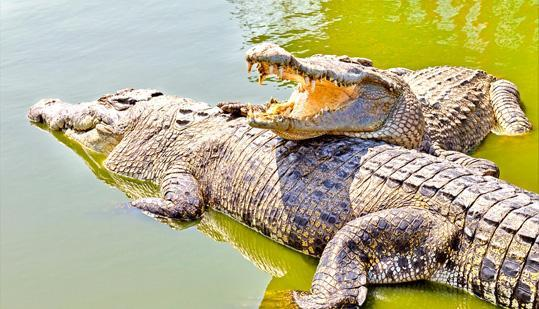

WildLife of Odisha
Home
About
programs
Feedback
Others
National parks in odihsa
Forest tourist places
Protected Areas By the Odisha Govt

Nandankanan
A short distance from the capital city, Bhubaneswar, the Nandankanan zoo lies in the splendid environs of the Chandaka forest, along the rippling waters of the Kanjia lake. It also contains a botanical garden and part of it has been declared as a sanctuary. Famous for its white tiger population, Nandankanan or the Garden of Gods has become a hot family favorite, with visitors getting an excellent opportunity to enjoy seeing these regal animals in their natural glory- in an environment conducive to their growth. Over 67 kinds of mammals, 18 varieties of reptiles and 81 species of birds coexist in the deeply forested boundaries. The zoo enjoys an excellent reputation internationally, for successfully breeding black panthers, Gharial Crocodiles and white tigers in captivity. Gharial Breeding For the first time ever, a captive breeding center was created for Gharial Crocodiles. This important task was also facilitated by the gift of an adult male from the Frankfurt zoo. White Tiger Breeding One of the rarest creatures in the world the regal white tiger received a new lease of life with the important research and concerted efforts initiated to try and breed them in the natural environs of Nandankanan. In 1980 on a day full of excitement and jubilation the first litter of white tigers was born to Deepak and Ganga, two normal tawny tigers. subsequent litters of white tigers have been distributed to zoos both at home and aboard. Currently, Nandankanan is home to over 34 white tigers. Endangered species such as the Asiatic lion,3 Indian Crocodiles, Shanghai lion-tailed macaque, Nilgiri langur, Indian Pangolin, mouse, deer and countless birds, reptiles and fish have been breeding successfully at Nandankanan. Some of the other attractions of Nandankanan are the 34 aquaria which are home to a large variety of freshwater fishes. The reptile parks cave-like entrance is guarded by a life-size dinosaur, Inside, numerous species of crocodiles, lizards turtles and snakes share the park with natural ease. The ropeway connecting the zoo with the botanical garden over the lake, the boating facilities and the toy train for children have added new features. Safaris The white tiger safari, established in 1991 offers visitors the heady excitement of viewing the rare white tigers from specially designed protected buses. The lion safari offers an adventurous zing to the trip to Nandankanan. The Chandaka Elephant Reserve Only one of its kind is perfect for Eco-tourism activities. Apart from the fabulous elephants, Cheetal, Bear, Peafowl, Sambar, and numerous other animals roam about doing their daily business unhampered. Similipal Tiger Reserve Mayurbhanj district is the home of one of the important national parks not only in Orissa but also in the country. Spread over an area of 2750 km, the park was specially chosen by project tiger for continuing the onerous task of conserving for the country’s deteriorating tiger population. One of India’s tiger reserves Similipal has over more than 95tigers within the lavish bounds of the Leopards, elephants, Mugger crocodiles, and numerous reptiles abound here. Over 231 species of birds people the forest and waterways in the park. Bhitarkanika Sanctuary Located in the second largest mangrove forest in the country, the sanctuary has protected the estuarine crocodiles since 1975. Located slightly further away is the coastal area of Gahirmatha, where the giant Pacific ridley sea turtles, traveling annually from as far away from South America nest by the millions. Special arrangements were made to ensure their protection as the turtles were preyed upon by the local folk many years ago. Tikarpara Sanctuary The sight of one of the most fabulous vistas of river and forest, the Satakosia gorge where the great Mahanadi river crashes in with monumental force is a dizzyingly enervating experience for the visitors. The meandering pace of the sensuous river,22 km. of thick forest, offers the scenic delight of the frothing, boiling water, as it wends its way through the fabulous gorge, considered to be one of the most enchanting spots in the world. It is the ideal place for boating, angling and other adventure sports. The gharial sanctuary at Tikarapara is a must-see for wildlife fans. Located at about 211 km from BBSR and 58 km from Angul, it offers forest bungalow accommodation at strategic places. If you want to camp inside the sanctuary you need special permission to do so. Lakhari Valley Sanctuary Located in Ganjam, it has a huge concentration of elephants and other wildlife. Blackbucks abound in the Bhetnai region. Chilika Lake Spread over an area of 1100 sq. km, the glorious stretch of the Chilika is Asia’s largest brackish water lake. Home to thousands of colorful birds throughout the year, it is particularly noisy withs the din of the raucous influx of migratory birds who descend on its form as far off as Siberia in winter. A real paradise for bird watchers, Chilika offers visitors a spectacular display of its colorful avian charms in a thousand different hues. The white-bellied sea eagle, the grey legged geese the peach color flamingo, purple moorhen, Jacana, and Heron-all mingle in a flurry of crested feathers and mind-blowing grace. The surrounding hills and sandy stretches abound in chital blackbuck, monkeys fishing casts, mongoose and porcupines and a dolphin population cavorting joyfully near the channel meets the sea. Snakes and turtles, lizards and cobras inhabit the surrounding beach area and wooded undergrowth. Several islands dot the expanse of the lake Nalbana island, because of its varied flora and fauna from the core of Chilika sanctuary Kalijai island is home to the goddess Kalijai and hosts a huge fair on Makara Sankranti annually in month Jan. Maa Kalijai is venerated by the local boatmen. The large fishing community lads local flavors on a trip to the lake. Up; til now, Barkul and Rambha on NH 5 were the base centers for a visit to this largest brackish water lake in Asia. With the natural charm of being located near the confluence of Chilika and the ocean and for its proximity to Puri (48 km), Satpada is an ideal spot to enjoy Chilika lake. The thrilling sight of dolphins round the year and abundance of migratory and resident birds in winter make Satpada a preferred place for a vacation with nature.
The project is designed and submitted by Mr Surya Kanta Rout